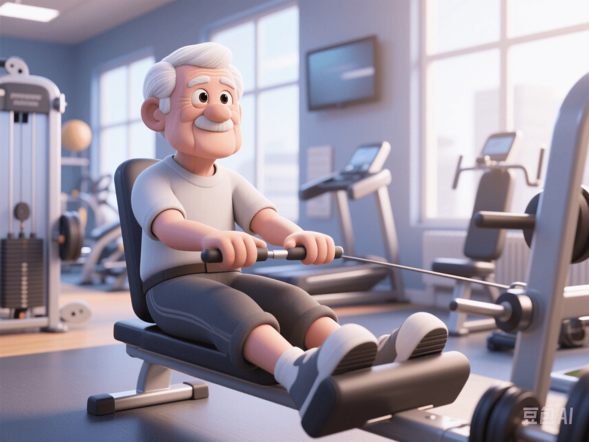

Guide to Resistance Training for Sarcopenia Prevention in Seniors
PeaceLove.Top Insights :2025-04-13
💪 Even the elderly can get stronger! A guide to resistance training for seniors to prevent sarcopenia. As we age, our bodies change subtly. One of the most notable changes is sarcopenia. Simply put, muscles gradually shrink without us noticing, bringing a series of risks such as weakness, falls, and fractures. The good news is that scientific resistance training can reverse this process. ✨
📊 What is Sarcopenia and Why Should We Pay Attention?
Sarcopenia refers to the significant decline in muscle mass and strength in the elderly as they age, which affects their daily activity ability. Global statistics show that among people over 70, one in four is at risk of sarcopenia. ⚠️ The consequences include:
- 🚷 Decreased balance ability → prone to falls and fractures
- 🧓 Weakened activity ability → difficulty in daily activities such as using the toilet and dressing
- 🛏️ Increased time in bed → increased risk of cardiovascular and metabolic diseases
🧠 A Major Recommendation from WHO: Resistance Training is the Golden Solution!
According to the latest health guidelines from the World Health Organization (WHO), people aged 65 and above should perform at least two full - body resistance training sessions per week. Each session should include exercises for muscle groups such as the legs, back, chest, and arms, and the load intensity should reach over 60% of 1RM (one - repetition maximum). 🏋️♀️ This means that the elderly need to engage in real and effective training, not just light movement!
🏋️ How to Do Resistance Training? Simple, Effective, and Safe!
Don't worry; you don't need to lift weights to the ceiling. The key points of training suitable for the elderly are safety, combination with aerobic exercise, and correct movements. For example:
✅ Recommended Exercises
- 🪑 Seated dumbbell press: Strengthen shoulder and back strength and improve standing posture
- 🏋️ Resistance band rowing: Strengthen the back and arm muscles and improve grip strength
- 🦵 Seated leg extension: Prevent leg weakness and unsteady walking
- 💪 Wall push - up: Exercise the upper limbs while protecting the joints
🕒 Training Principles
- Do 8 - 12 repetitions per set and rest for 1 minute
- Do 2 - 3 sets for each exercise
- Train 2 - 3 times a week. Persistence is the key!
🌟 Real Benefits, Visible Changes!
After more than three months of consistent resistance training, the elderly usually see obvious benefits:
- ✅ Muscles become firmer, and they are less likely to fall
- ✅ They move more freely, and their physical strength returns to a more youthful state
- ✅ They are in a better mood, and the sense of depression is reduced
A study published in the Journal of Geriatric Physical Therapy pointed out that systematic resistance training can reduce the risk of sarcopenia by nearly 40%. 🎉
❤️ Special Reminder: Training is Good, but Safety Comes First!
- ✔️ Beginners are advised to be guided by a coach or accompanied by family members
- ✔️ Increase the weight gradually and don't overdo it
- ✔️ If you have chronic diseases such as heart disease or hypertension, be sure to consult a doctor first
- ✔️ Pay attention to protein supplementation after training to promote muscle repair. 💧🍳
🌈 Summary: Age is Not a Limit, but a Reason to Exercise!
Who says "the elderly can only walk slowly"? As long as you start scientific exercise, you can become stronger as you age! Let's remember one sentence: "Don't be afraid of getting old, just be afraid of not moving." 🏋️♂️ For health, freedom, and vitality, start with a set of squats today! 🔁 Share this with your loved parents or grandparents and join the "Anti - Sarcopenia Alliance" together. 💥